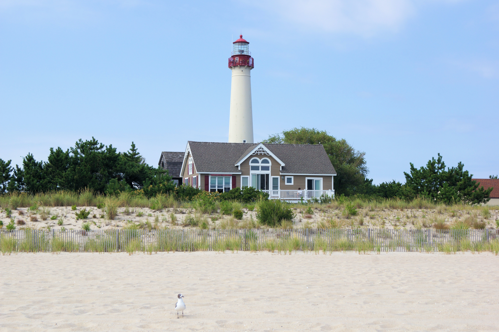

Welcome to Cape May!
Located at the southern tip of the Jersey Shore, Cape May, New Jersey, captivates visitors with its Victorian charm, stunning beaches, and rich oceanside history. Known for its well-preserved historic architecture, the city has a collection of elegant Victorian homes, earning it the designation of a National Historic Landmark. Walk down the quaint streets lined with bed-and-breakfast inns, boutique shops, and cute cafes. Cape May's beaches offer a gorgeous escape, while the Cape May Lighthouse and the Cape May Bird Observatory attract nature lovers. With a ton of festivals, tours, and outdoor activities, Cape May wants visitors to enjoy its unique blend of history, natural beauty, and coastal allure.
| Facts | Details |
|---|---|
| Population | 2,834 |
| Year Incorporated | 1848 |
| Classification | Suburban |
| Average Income (Household) | 64,330 |
| Region | South |